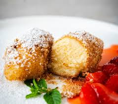

Bild
Zutaten
- 250 g Topfen (Quark)
- 1 Ei
- 2 EL Zucker
- 1 Päckchen Vanillezucker
- 80 g Mehl
- 1 Prise Salz
- Butter + Semmelbrösel (zum Wälzen)
Zubereitung
- Topfen, Ei, Zucker, Vanillezucker verrühren.
- Mehl + Salz dazu und zu einem Teig mischen.
- Mit einem Löffel Nockerl formen.
- In leicht kochendem Wasser ca. 8–10 Minuten ziehen lassen.
- In Butter gerösteten Semmelbröseln wälzen.
Tipp: Apfelmus oder Vanillesauce macht’s illegal gut 😄